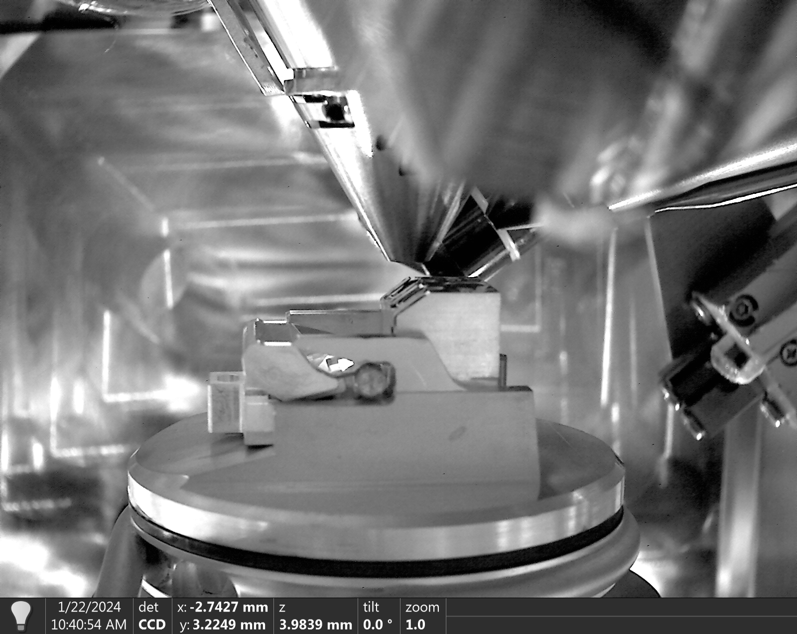
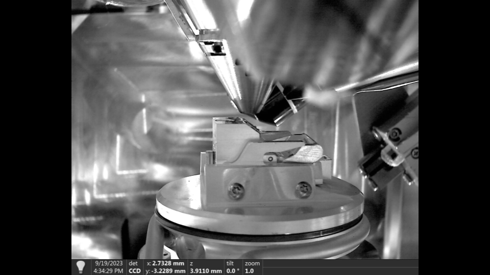
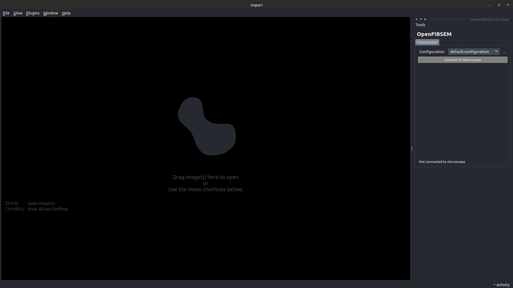
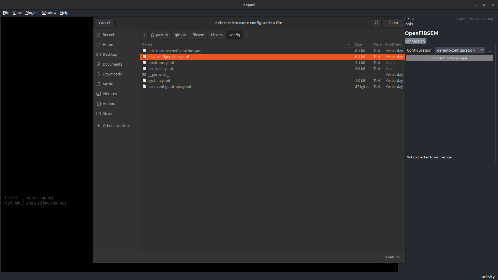
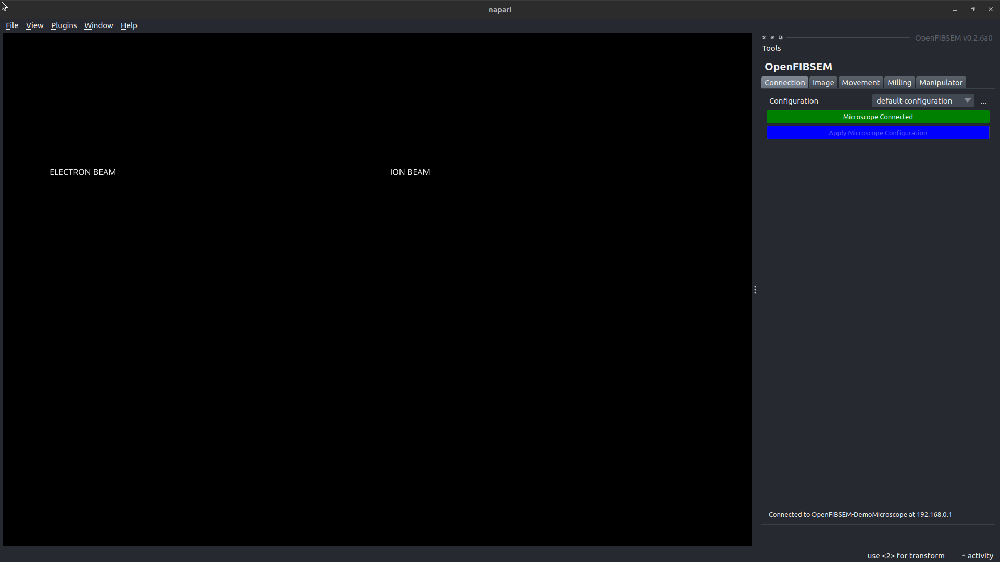
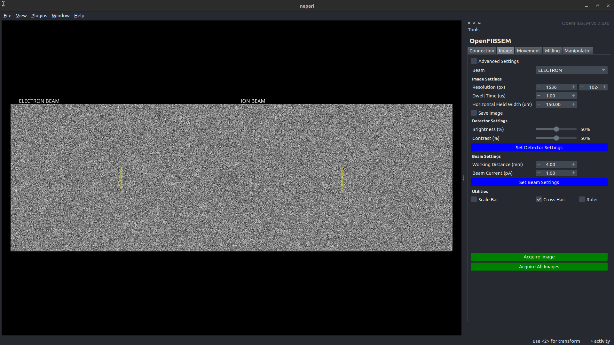

Getting Started
Install OpenFIBSEM
Install Package
Additional Installation Information
For detailed instructions on installation, and installing the commercial microscope APIs, see Installation Guide.
Configuring your Microscope
To get started you only need a few values to configure your microscope. See below for a explanation of some these values.
name: monash-tfs-hydra-pfib-01 # a descriptive name for your configuration
ip_address: 192.168.0.1 # the ip address of the microscope PC
manufacturer: Thermo # the microscope manufactuer, Thermo, Tescan or Demo
rotation-reference: 49 # the reference rotation value (rotation when loading) [degrees]
shuttle-pre-tilt: 35 # the pre-tilt of the shuttle [degrees]
electron-beam-eucentric-height: 4.0e-3 # the eucentric height of the electron beam [metres]
ion-beam-eucentric-height: 16.5e-3 # the eucentric height of the ion beam [metres]
Generating an intial configuration
To generate an initial configuration for your microscope, run the cli:
This will walk you through generating your configuration, and use derived and default values for the rest of the configuration to get you started.
You can edit the rest of the configuration values once it has been generated. The full configuration is below.
Full Microscope Configuration
The full microscope configuration after generation is as follows. See below for an explanation of some specific values.
# configuration
# Please don't edit or delete this file, it is the default configuration for the microscope
# configuration
info:
name: openfibsem-microscope-configuration # a descriptive name for your configuration [SPECIFIED]
ip_address: 192.168.0.1 # the ip address of the microscope PC [SPECIFIED]
manufacturer: Thermo # the microscope manufactuer [SPECIFIED]
stage:
enabled: true # the stage is enabled [USER]
rotation: true # the stage is able to rotate [USER]
tilt: true # the stage is able to tilt [USER]
rotation_reference: 0 # the reference rotation value [SPECIFIED]
rotation_180: 180 # the reference rotation + 180 degrees [DERIVED - rotation-reference]
shuttle_pre_tilt: 35.0 # the pre-tilt of the shuttle [SPECIFIED]
manipulator_height_limit: 0.0037 # the linked height limit for manipulator (Thermo Only) [DERIVED - manufactuer]
electron:
enabled: true # the electron beam is enabled [USER]
column_tilt: 0 # the column tilt of the electron beam [DERIVED - manufactuer]
eucentric_height: 7.0e-3 # the eucentric height of the electron beam [SPECIFIED]
voltage: 2000 # the voltage of the electron beam [USER]
current: 50.0e-12 # the current of the electron beam [USER]
resolution: [1536, 1024] # the default electron resolution [pixel] [USER]
hfw: 150.0e-6 # the default electron hfw [metres][USER]
dwell_time: 1.0e-06 # the default electron dwell time
detector_mode: SecondaryElectrons # the detector mode of the electron beam [USER]
detector_type: ETD # the detector type of the electron beam [USER]
ion:
enabled: true # the ion beam is enabled [USER]
column_tilt: 52 # the column tilt of the electron beam [SPECIFIED]
eucentric_height: 16.5e-3 # the eucentric height of the ion beam [SPECIFIED]
plasma: false # ion beam is a plasma column [USER]
plasma_gas: None # the plasma gas for the ion beam (plasma fib only) [USER]
voltage: 30000 # the voltage of the ion beam [USER]
current: 2.0e-11 # the current of the ion beam [USER]
resolution: [1536, 1024] # the default ion resolution [pixel] [USER]
hfw: 150.0e-6 # the default ion hfw [metres][USER]
dwell_time: 1.0e-06 # the default ion dwell time
detector_mode: SecondaryElectrons # the detector mode of the ion beam [USER]
detector_type: ETD # the detector type of the ion beam [USER]
manipulator:
enabled: true # manipulator is enabled [USER]
rotation: false # manipulator is able to rotate [USER]
tilt: false # manipulator is able to tilt [USER]
gis:
enabled: true # gis is enabled [USER]
multichem: true # multichem is enabled [USER]
sputter_coater: false # sputter coater is enabled [USER]
imaging:
beam_type: ELECTRON # the default imaging beam type (ELECTRON, or ION) [USER]
resolution: [1536, 1024] # the default imaging resolution [pixel] [USER]
hfw: 150.0e-6 # the default imaging hfw [metres][USER]
dwell_time: 1.0e-06 # the default imaging dwell time [second][USER]
imaging_current: 2.0e-11 # the default imaging current [amp] [USER]
autocontrast: true # use autocontrast [USER]
autogamma: false # use autogamma [USER]
save: false # auto save images [USER]
milling:
milling_voltage: 30000 # the default milling voltage (Thermo) [volt] [USER]
milling_current: 2.0e-09 # the default milling current (Thermo) [amp] [USER]
dwell_time: 1.0e-06 # the default milling dwell time (TESCAN) [second][USER]
rate: 3.4e-09 # the default milling spuuter rate (TESCAN) [um3/s] [USER]
spot_size: 5.4e-08 # the default milling spot size (TESCAN) [metres][USER]
preset: "30 keV; 20 nA" # the default milling preset (TESCAN) [USER]
IP Address
To find the local ip address of the microscope PC, you can use ipconfig. If you have a standard setup, and have installed openfibsem on the Support PC, this ip address is usually 192.168.0.1. But this might not be the case, so check with ipconfig
Rotation Reference
The rotation reference is the reference point for stage rotation. For standard ThermoFisher systems it is the rotation when initially loading the stage. It is also the rotation used when you tilt perpendicular to the Electron Beam. The rotation_180 value is 180 degrees offset from the reference rotation, and is the rotation used to tilt perpendicular to the Ion Beam.
 Rotation Reference Position
 Rotation 180 Reference Position
Column Tilt
The column tilt angle for each beam. This is standardised for each manufactuer.
| Manufacturer | Electron Beam | Ion Beam |
|---|---|---|
| Thermo Fisher | 0 deg | 52 deg |
| Tescan | 0 deg | 55 deg |
Eucentric Height
The pre-defined working distance for each beam, that defines the eucentric point of the system. This is standard for each different model. I will add more to the table below as I confirm them.
| Model | Electron Beam | Ion Beam |
|---|---|---|
| TFS - Helios (Hydra) | 4.0 mm | 16.5 mm |
| TFS - Aquilos | 7.0 mm | 19 mm |
| TESCAN - Amber |
Thermo Fisher Microscopes
If you are using a Thermo Fisher FIBSEM, I would recommend loading our application files; autolamella and cryo_Pt_dep. You don't have to use them, but you may need to setup application files to work with our milling conventions.
They are found in fibsem/external/application_files. You can load them using xTUI.
System Fingerprint
BETA: Not Yet Available
Connect to the microscope, read the configuration directly from it.
Connecting to the Microscope
Once you have configured you microscope, you should be able to connect to the microscope.
Before You Start
Before you start it is recommended that you setup the microscope in the same way you would normally. This includes:
- Pumping the System
- Loading a Sample
- Turning on the Beams
- Linking the Stage (Thermo Fisher)
- Anything else
We are working on controlling these aspects of the systems, but for now consider them pre-requistes for using openfibsem (and applications)
Try out Examples
To get familiar with the API, you can try out the example scripts.
Run the User Interface
You can run the general microscope user interface with the following command:
Or if you installed the napari plugin, you can launch it through the plugin menu.
 OpenFIBSEM UI - Start Up
Select Your Configuration
From here, you can select your configuration using the "..." button. Select your configuration, add it to the user configurations, and make it the default.
 OpenFIBSEM UI - Select Configuration
Connect to the Microscope
Once you have selected your configuration, you can connect to the microscope. From here you have full control over the microscope systems.
 OpenFIBSEM UI - Microscope Connected
Acquire Images
Change to the Image tab, and try to take an image.
 OpenFIBSEM UI - Images Acquired
Congratulations
If you made it this far, congratulations! Your system is setup and should be ready to use. We have only scratched the surface of concepts and the api, so please check out the Concepts page to learn more about the OpenFIBSEM API, and how it can best help you.
If you have any questions feel free to reach out to Patrick on Twitter or via email.